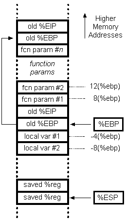

<HTML>
<HEAD>
   <META HTTP-EQUIV="Content-Type" CONTENT="text/html; charset=iso-8859-1">
   <META NAME="Author" CONTENT="Mike Dahlin, Mootaz Elnozahy">
   <META NAME="GENERATOR" CONTENT="Mozilla/4.04 [en] (WinNT; I) [Netscape]">
   <META NAME="Classification" CONTENT="Public">
   <META NAME="Description" CONTENT="Description of Project # 1">
   <META NAME="KeyWords" CONTENT="CS372, CS 372, Fall 2010">
   <TITLE>Project ULT</TITLE>
</HEAD>
<BODY TEXT="#000000" BGCOLOR="#FFFFFF" LINK="#0000EE" VLINK="#551A8B" ALINK="#FF0000">
&nbsp;
<CENTER><TABLE CELLSPACING=0 CELLPADDING=0 COLS=2 WIDTH="100%" >
<TR>
<TD>
<H2>
<FONT COLOR="#000099">CS 372</FONT></H2>
</TD>

<TD>
<DIV ALIGN=right>
<H2>
<FONT COLOR="#000099">2010</FONT></H2></DIV>
</TD>
</TR>
</TABLE></CENTER>
&nbsp;
<TABLE COLS=1 WIDTH="100%" >
<TR>
<TD>
<CENTER>
<H2>
Project 1</H2></CENTER>

<CENTER>
<H3>
A User-Level Thread Package</H3></CENTER>
</TD>
</TR>
</TABLE>

<CENTER><B>Phase 1 Due:</B> Friday, Sept 17, 2010, 4:59:59 PM</CENTER>
<CENTER><B>Remainder Due:</B> Friday, Feb 24, 2010, 4:59:59 PM</CENTER>
<H3>
<A NAME="Section 1"></A><FONT COLOR="#003300">1. Threads</FONT></H3>

<H4>
<A NAME="1.1 Quick Overview"></A><FONT COLOR="#003300">1.1 Quick Overview</FONT></H4>
A key abstraction in operating systems is threads and processes for concurrency.
To gain a deeper understanding of how these abstractions are constructed,
this project asks you to build the core of a user-level threads package.
Building kernel or kernel-supported processes and threads not would be much different,
but we'll do this project at user level since installing new kernels on
the instructional machines would be problematic.

<P>Threads provide the illusion that different parts of your program are
executing concurrently. Through the years, a model of executing multithreaded
programs has emerged as a defacto standard. In this model, threads share
the code, heap, and the runtime system. Each thread,  however,  has a separate
stack and, naturally, a separate set of CPU registers. This programming
model also provides synchronization primitives so that different threads
can coordinate access to shared resources.
<H4>
<A NAME="1.3 scope"></A><FONT COLOR="#003300">1.2 Project Scope</FONT></H4>
You will construct a library of functions that define a user-level threads
package. Using your library, a program can create threads, destroy them,
and allow the threads to control the scheduling underneath. Thus, a typical
program using your library will typically look like:
<UL>main(int argc, char ** argv)
<BR>{
<UL>// Some initialization
<BR>// Create threads
<BR>// wait for threads to finish
<BR>// exit</UL>
}
<BR>
<BR>// "Main" procedure for thread i
<BR>thread_i (...)
<BR>{
<UL>// do some work
<BR>// yield
<BR>// repeat as necessary
<BR>// return (implicit thread destruction)</UL>
}</UL>
where "thread i" is a function that the i<SUP>th</SUP> thread calls to
start executing.
<BR>When a thread is created, it is "assigned" a function from which it
starts executing. The thread within that function can perform useful work,
then yield (voluntarily or involuntarily) the CPU to another thread, and
repeat this sequence as necessary. The thread of course can call other
functions from within its "root" function. A thread can destroy itself
explicitly or implicitly. Explicit destruction is done by calling the thread
library. The thread is implicitly destroyed when its root function returns.
Additionally, to add more control to the program, a thread may destroy
other threads as well.
<H4>
1.3 User-level v. kernel-supported threads</H4>
For practical reasons, this project is done at user level: you will construct
a set of functions that your program will call to provide the illusion
of concurrency. Modern operating systems provide kernel threads where similar
functions are provided as system calls to the kernel rather than function
calls to a library. Both types of threads use the same core techniques
for providing the concurrency abstraction; you would build kernel threads
in essentially the same way you build user threads in this project. Also,
threads within the kernel are built using essentially these techniques.


<P>There are a few differences between kernel and user threads. Mainly:
<UL>
<LI>
<B>Multiprocessing. </B>Whereas user level threads provide the illusion
of concurrency, on machines with multiple processors, kernel-supported threads
can provide actual concurrency. This is because for user level threads,
the kernel schedules the user process on one CPU and the user-level threads
package multiplexes threads of control within the process. For kernel-supported threads,
the kernel is aware of different threads of control, and it can simultaneously
schedule different threads from the same process on different processors.</LI>

<P><B>Note:</B> A key simplifying assumption for this project is that you will
allow programs to multiplex some number (e.g., <I>m</I>) of user level
threads on <I>one</I> kernel-supported thread.  This means that at most one user
level thread is running at a time and that your runtime system has
complete control over the interleaving of user level threads with each
other. More sophisticated systems implement <I>m on n</I> threads
packages where <I>m</I> user level threads are multiplexed across
<I>n</I> kernel-supported threads.
</P>

<LI>
<B>Asynchronous I/O.</B> When a user-level thread makes a system call that
blocks (e.g., reading a file from disk), the kernel scheduler moves the
process to the <I>Waiting</I> state and will not schedule it until the
I/O has completed. Thus, even if there are other user-level threads within
that process, they have to wait, too. Conversely, when a kernel-supported thread
blocks for a system call, the kernel scheduler is aware that other threads
in the same process may be ready to run. Thus, some kernel-supported threads may
be running while others are waiting for I/O.</LI>

<LI>
<B>Timer interrupts.</B> In this project, to simulate the timer interrupts
that cause the scheduler to switch from one thread or process to
another, we will use POSIX signals. In your implementation, the threads
library will will "turn off interrupts" by blocking delivery of these signals
using system calls. However, there is nothing to prevent the threads, themselves,
from "turning off interrupts" the same way. Thus, even though we will implement
"preemptive" threads, a "malicious" thread could turn off interrupts and
not be preempted until it calls Yield(), thus hogging the CPU. Note that
kernel schedulers don't have this problem. Only the privileged code in
the kernel can turn off the real timer interrupts.</LI>
</UL>

<H4>
1.4 Project phases</H4>
We will tackle the project in two phases. First, build the basic
thread API without preemption. Second, add the simulated timer interrupts
and preemptive scheduling. The following sections describe the project in more detail using
this organization.

<p>
We provide code to help you get started in <A HREF="http://www.cs.utexas.edu/users/dahlin/Classes/UGOS/labs/labULT.tar">http://www.cs.utexas.edu/users/dahlin/Classes/UGOS/labs/labULT.tar</A>
</p>


<H4>1.5 Background: C and other tools</H4>


<blockquote>
  <p>This lab is written in C. If you know another language
  (e.g., Java, C++),
  but not C, don't worry -- this project will not require a sophisticated
  understanding of C, and I will try to point out key language-specific issues
  as they arise.&nbsp;</p>
  <p>The following references may be of use. I list them in order from least to
  most comprehensive/authoritative. (Note that these are provided for reference
  only; they are not required reading.)</p>
  <ul>
    <li>Chapter 3 &quot;Reading C Programs&quot; of <a href="http://www.lemis.com/grog/Documentation/Lions/">Lions
      Commentary on the 6th Edition of the UNIX Operating System</a> provides a
      quick (6 page) overview of C syntax, with a particular emphasis on some of
      the gnarly constructs OS writers sometimes like to use when they are
      feeling clever. Some of the dialect and style is a bit archaic, but this
      short document focused on reading and understanding C-language operating
      system code is probably a good place to start for this project.<br>
    </li>
    <li>The good, fairly-complete&nbsp; introduction to C for people that know
      other languages is &quot;<a href="http://www-h.eng.cam.ac.uk/help/tpl/languages/C/teaching_C">ANSI
      C for Programmers on UNIX Systems</a>&quot; by Tim Love. [<a href="http://www.cs.utexas.edu/users/dahlin/Classes/UGOS/reading/loveC.pdf">local
      .pdf copy</a>]<br>
    </li>
    <li><a href="http://www.google.com/Top/Computers/Programming/Languages/C/FAQs,_Help,_and_Tutorials/">Here</a>
      are a bunch of other tutorials, FAQs, and references.<br>
    </li>
    <li>The classic reference for C:<i> The C programming language</i> by
      Kernighan and Ritchie. Prentice Hall, Inc., 1988. ISBN 0-13-110362-8,
      1998. Buy this book if you plan to do a lot of C programming.<br>
    </li>
  </ul>
  <p>More broadly, I assume that everyone in the class has reasonably strong
  programming skills and that you are comfortable using the basic tools of the
  trade (debuggers, makefiles, etc.) <a href="http://www.cs.utexas.edu/users/dahlin/Classes/UGOS/reading/references.html">Here</a>
  are some references if you need to brush up on any of these basic
  skills.</p>

  <p>
  Last year, I wrote a short <A HREF="../labC/C.html">homework</A> to help people pick up the
  basics of C. It is not required this year, but you are welcome to 
  use it if you want. (But don't turn it in).
</blockquote>


<H3>
<A NAME="Section 2"></A><FONT COLOR="#003300">2. Phase 1: Cooperative Thread
Package Application Program Interface (API)</FONT></H3>
<FONT COLOR="#000000">The thread package provides several functions calls
to allow application programs a degree of control over thread management.
In addition, there are a few conventions that application programs must
adhere to in order to ensure proper and safe operation. A list of the functions
that constitute the User-level threads (ULT) API can be found in <A HREF="ULT.h">ULT.h</A>
and are summarized here:</FONT>
<UL>
<LI>
<B><FONT COLOR="#663366">Tid ULT_Yield(Tid tid):&nbsp; </FONT></B><FONT COLOR="#000000">This
function suspends the caller and activates the thread given by the identifier
</FONT><B><I><FONT COLOR="#663366">tid. </FONT></I></B><FONT COLOR="#000000">The
caller is put on the ready queue and can be invoked later in a similar
fashion. The value of </FONT><B><I><FONT COLOR="#663366">tid </FONT></I></B><FONT COLOR="#000000">may
take the identifier of any available thread. It also can take any of the
following constants:</FONT></LI>

<UL>
<LI>
<FONT COLOR="#000000">The constant </FONT><B><FONT COLOR="#006600">ULT_ANY
</FONT></B><FONT COLOR="#000000">tells the thread system to invoke any
thread on the ready queue. A sane policy is to run the thread at the head
of the ready queue.</FONT></LI>

<LI>
<FONT COLOR="#000000">The constant </FONT><B><FONT COLOR="#006600">ULT_SELF
</FONT></B><FONT COLOR="#000000">tells the thread system to continue the
execution of the caller. This turns the function call into an no-op, but
it may be useful for debugging purposes.</FONT></LI>
</UL>
<FONT COLOR="#000000">The function returns the identifier of the thread
that took control as a result of the function call. Note that the caller
does not get to see the result until it gets its turn to run (later). The
function also may fail and the caller resumes immediately. To indicate
the reason for failure, the call returns one of these constants:</FONT>
<UL>
<LI>
<FONT COLOR="#000000">The constant </FONT><B><FONT COLOR="#006600">ULT_INVALID
</FONT></B><FONT COLOR="#000000">alerts the caller that the identifier</FONT><B><FONT COLOR="#663366">
<I>tid </I></FONT></B><FONT COLOR="#000000">does not correspond to a valid
thread.</FONT></LI>

<LI>
<FONT COLOR="#000000">The constant </FONT><B><FONT COLOR="#006600">ULT_NONE
</FONT></B><FONT COLOR="#000000">alerts the caller that there are no more
threads (other than the caller) available to run (in response to a
call
with <I>tid</I> set to ULT_SELF) or available to destroy (in response
to a call wtih <I>tid</I> set to ULT_ANY.)</LI>
</UL>
</LI>


<LI>
<B><FONT COLOR="#663366">Tid ULT_CreateThread(void (*fn)(void *), 
void *arg):&nbsp;&nbsp; </FONT></B><FONT COLOR="#000000">This function
creates a thread whose starting point is the function </FONT><B><I><FONT COLOR="#663366">fn.
</FONT></I></B>.
<B><I><FONT COLOR="#663366">Arg</FONT></I></B><FONT COLOR="#000000">
is a pointer that will be passed to the function when the thread starts
executing; arg thus allows arguments to be passed to the function. Upon
success, the function returns a thread identifier of type </FONT><B><I><FONT COLOR="#663366">Tid.
</FONT></I></B><FONT COLOR="#000000">If the function fails, it returns
a value that indicates the reason of failure as follows:</FONT></LI>

<UL>
<LI>
<FONT COLOR="#000000">The constant </FONT><B><FONT COLOR="#006600">ULT_NOMORE
</FONT></B><FONT COLOR="#000000">alerts the caller that the thread package
cannot create more threads.</FONT></LI>

<LI>
<FONT COLOR="#000000">The constant </FONT><B><FONT COLOR="#006600">ULT_NOMEMORY
</FONT></B><FONT COLOR="#000000">alerts the caller that the thread package
could not allocate memory to create a stack of the desired size.</FONT></LI>
</UL>
<FONT COLOR="#000000">The created thread is put on a ready queue but does
not start execution yet. The caller of the function continues to execute
after the function returns.</FONT>

<LI>
<B><FONT COLOR="#663366">Tid ULT_DestroyThread(Tid tid):&nbsp;</FONT></B><FONT COLOR="#000000">
This function destroys the thread whose identifier is </FONT><B><I><FONT COLOR="#663366">tid.
</FONT></I></B><FONT COLOR="#000000">The caller continues to execute and
receives the result of the call. The value of </FONT><B><I><FONT COLOR="#663366">tid
</FONT></I></B><FONT COLOR="#000000">may take the identifier of any available
thread. It also can take any of the following constants:</FONT></LI>

<UL>
<LI>
<FONT COLOR="#000000">The constant </FONT><B><FONT COLOR="#006600">ULT_ANY
</FONT></B><FONT COLOR="#000000">tells the thread system to destroy any
thread <I>except the caller</I>. While this sounds too draconian, this function
can help in dealing with drastic situations where a thread detects a fatal
error that cannot be handled and the only recourse is to stop the program.</FONT></LI>

<LI>
<FONT COLOR="#000000">The constant </FONT><B><FONT COLOR="#006600">ULT_SELF
</FONT></B><FONT COLOR="#000000">tells the thread system to destroy the
caller. In this case, the system destroys the caller and reclaims its resources.
The function obviously does not return in this case. Instead, some
other ready thread gets scheduled.</FONT></LI>

<p><B>Be careful.</B> It is dangerous to use memory once it has been freed. In particular,
you should not free the stack of the currently running thread while it is still
running. (Yet you still need to make sure that that stack eventually
gets deallocated. Think about this a bit!)  You should convince yourself that
your program would work even if you used a debugging malloc library
that overwrites a block with dummy data when that block is free()'d.
</p>

<p><B>Be careful.</B> If you destroy a thread that is holding a
lock, deadlock may occur. For this reason, it is usually best to only use DestroyThread
to have each thread destroy itself (not other threads.) In fact, the Java library <I>deprecates</I>
the equivalent function in their thread library.
Note that Java's alternative makes use of the richer exception
model that Java has compared to C.
We include the more general form here
partly as a design exercise and because you may need it for some of your tests.
</UL>
<FONT COLOR="#000000">Upon success, the function returns the identifier
of the destroyed thread. The function also may fail and returns one of
these constants:</FONT>
<UL>
<LI>
<FONT COLOR="#000000">The constant </FONT><B><FONT COLOR="#006600">ULT_INVALID
</FONT></B><FONT COLOR="#000000">alerts the caller that the identifier</FONT><B><FONT COLOR="#663366">
<I>tid </I></FONT></B><FONT COLOR="#000000">does not correspond to a valid
thread.</FONT></LI>

<LI>
<FONT COLOR="#000000">The constant </FONT><B><FONT COLOR="#006600">ULT_NONE
</FONT></B><FONT COLOR="#000000">alerts the caller that there are no
more other
threads available to destroy (in response to a call with </FONT><B><I><FONT COLOR="#663366">tid
</FONT></I></B><FONT COLOR="#000000">set to </FONT><B><FONT COLOR="#006600">ULT_ANY</FONT></B><FONT COLOR="#000000">)</FONT><FONT COLOR="#006600">.</FONT></LI>
</UL>
</UL>

<H4>
<FONT COLOR="#003300">2.1 Structure of and requirements on your solution:</FONT></H4>
<FONT COLOR="#000000">Your library must maintain a "thread control block"
for each thread that is running in the system. This is similar to the process
control block that an operating system implements to support process management.
In addition, your library must maintain a queue of the threads ready to
run, so that it can process the application program function calls. Note
that the application programs do not explicitly call a function to initialize
the library data structures. Therefore, your library must always ensure
that any necessary initialization is done during the first time a function
is called within the library.</FONT>
<p>

<FONT COLOR="#000000">Each thread should have a stack of at least
<B>ULT_MIN_STACK</B> and your implementation should support the
creation exactly <B>ULT_MAX_THREADS</B></FONT> threads by a
program (including the initial main thread). Your implementation <B>must not</B> statically allocate all
stacks at initialization time. Instead, you must dynamically allocate a stack
whenever a new thread is created (and delete one each time a thread is destroyed.)</p>


<H4> <FONT
COLOR="#003300">2.2 Thread Context</FONT></H4> <FONT
COLOR="#000000">When a thread yields the CPU, the library must save
the thread's current context. The current context contains all the
registers that belong to the thread. The library restores the saved
context later when the thread gets its turn to run on the
processor. Additionally, the library creates a fresh context and a
new stack when it creates a thread. Fortunately, C and C++ runtime
systems allow an application to retrieve its current context and
store it in a program variable and to set its current context to a
predetermined value from a program variable (one that was set
earlier).</FONT>

<P><FONT COLOR="#000000"> You should study the man
pages for the following library calls:</FONT>
<UL>
  <LI> <FONT COLOR="#000000">makecontext,
setcontext, getcontext, swapcontext</FONT></LI>  <FONT
</UL>
<FONT COLOR="#000000">In addition to
the man pages, you may want to investigate #include files associated
with these calls. On the CS public linux machines these include
files are in /usr/include and /usr/include/sys.</FONT>


<H4> <FONT
COLOR="#003300">2.3 Stub function:</FONT></H4> <FONT
COLOR="#000000">As explained earlier, a thread is destroyed
implicitly when it returns from its "root" function, much like the
main program thread is destroyed when it returns from the "main"
program. A simple implementation of this feature would be to start
the thread initially in a "stub" function that calls the actual root
function of the thread (much like main is actually being called from
the crt0 stub in UNIX). This would work like:</FONT> <BR>&nbsp;
<UL>
  <FONT COLOR="#000000">Stub(void (*fn)(void *), void *arg)</FONT>
  <BR><FONT
COLOR="#000000">{</FONT>
  <UL><FONT COLOR="#000000">// thread starts
here</FONT> <BR><FONT COLOR="#000000">Tid ret;</FONT> <BR><FONT
COLOR="#000000">fn(arg); // call root function</FONT> <BR><FONT
COLOR="#000000">ret = ULT_DestroyThread(ULT_SELF)</FONT> <BR><FONT
COLOR="#000000">assert(ret == ULT_NONE); // we should only get here
if we are the last thread. </FONT>
  <BR><FONT
COLOR="#000000">exit(0); // all threads are done, so process should
exit</FONT>
</UL>
<BR><FONT COLOR="#000000">}</FONT>
</UL>
<H4>2.4 On contexts and calling conventions</H4> 
<p><FONT COLOR="#000000">The context variable
contains many data fields, but you need only deal with two of them:
the stack pointer and the program counter. Other than that, you
don't need to worry about the fields within the context variable, as
long as you do not tamper with them. Also, it is a good idea to use
variables that have been initialized through a getcontext
call in order to not have bizarre behavior. </FONT></p>

<p>That library functions like <tt>makecontext()</tt> can
handle the details of manipulating the context state so that
you don't have to get bogged down in too many architecture-specific
details.
Still, it is important to understand what's going on.
The man pages and include files provide some info, and <A
HREF="http://www.delorie.com/gnu/docs/glibc/libc_465.html">here</A> is
another discussion that provides much more detail.</p>

<p>Under the C calling conventions in x86, here's what
things look like while  any given function is executing:</p>

<CENTER>
</IMG>
<BR><FONT SIZE=-5>Image from <A HREF="http://unixwiz.net/techtips/win32-callconv-asm.html">unixwiz.net</A></FONT>
</CENTER>

<p>Notice that as a procedure executes, it can allocate
local space by moving the stack pointer, and it can
find local variables, parameters, return addresses, and
the return %ebp by indexing relative to the (fixed) %ebp
register.</p>

<p>
To make a procedure call, the compiler pushes parameters onto the
stack from right to left, saves the current instruction pointer
(eip) onto the stack, and changes the instruction pointer to the 
called procedure. The called procedure then saves the old
frame pointer (ebp) onto the stack and sets the new frame
pointer to point to the old frame pointer at the top of the stack. 
Now the called function is free to shove other stuff
onto the stack (e.g., local variables, register spills, saved
registers, the frames of called procedures) because
it can still locate stuff (especially return information) relative
to the fixed frame pointer (ebp). </p>

<p>To return to the caller, 
a procedure simply copies the frame pointer (ebp) to the stack pointer
(esp),
pops the top stack item into ebp to restore the old ebp,
and uses the <tt>ret</tt> instruction to pop the old instruction 
pointer  off the stack into the processor's instruction register
(eip), returning control to the calling function.</p> 


 <H4> 2.5 Hints, leading questions, and advice</H4> 

<p>This project does not require to
write a large number of lines of code. It does require you to think
carefully about the code you write. Before you dive into writing
code, it will pay to spend time planning and understanding the code
you are going to write. If you think the problem through from
beginning to end, this project will not be too hard. If you try to
hack your way out of trouble, you will spend many frustrating nights
in the lab.  </p>

<P>As a start, here are some questions you should
answer before you write code. 

<UL> <LI> Getcontext
return twice. Once when you create a context and again when you
switch to that context. What action will you take in each case? How
will you tell which case you are in?</LI>  

<LI> Most threads are created with ULT_CreateThread(), but 
the initial thread is there before your library is
invoked. Nonetheless,
the original thread must be able to ULT_Yield() to let other
threads run, and other threads must be able to ULT_Yield()
and let the original thread run.
</LI>
<LI>
In fact, a <b>strongly recommended</b> first
milestone might be for ULT_Yield(ULT_SELF) to work for
the initial thread (where your implementation stores
the caller's state to a thread control block in the ready
queue and then resores that state from the thread control block.
Get this working before you try to implement ULT_CreateThread()
or ULT_DeleteThread().</LI>
<LI>
Also note that when
the initial thread in a C process returns, it calls the exit()
system call, which causes the OS to destroy the process (even
if you have other user level threads in the process that want to run.)
</LI>


<LI> A hard bug to find would
be an overflow or underflow of the stack you allocate. How might
such a bug manifest itself? What defensive programming strategies
can you use to detect stack overflow in a more controlled manner as
the system runs?</LI> 

<LI><B>Use a debugger</B>. As an exercise, put a breakpoint
at the instruction after you copy the current thread's state
using <tt>getcontext()</tt>. You can print the current
values of the registers (in gdb, type "info registers"). 
<pre>
(gdb) info registers
eax            0x0	0
ecx            0x0	0
edx            0x804b224	134525476
ebx            0xf7f49ff4	-134963212
esp            0xffee72f0	0xffee72f0
ebp            0xffee7318	0xffee7318
esi            0xf7f8dce0	-134685472
edi            0x0	0
eip            0x8048d15	0x8048d15 <ULT_Yield+155>
eflags         0x246	[ PF ZF IF ]
cs             0x23	35
ss             0x2b	43
ds             0x2b	43
es             0x2b	43
fs             0x0	0
gs             0x63	99
</pre>
You can print the values stored in your structs
(e.g., in gdb I use "print/x myTcb->context" to print
the context stored by a call to getcontext()).

<p>You may find this particularly useful in making
sure that the state you "restore" when you first
run a newly-created thread makes sense.</p>
</LI>

</UL>  

<H4>2.6 Tests</H4>
<p>
Once phase 1 is done, the tests in doTest.c should run.
Grade.sh will compare your results to the expected
results in <A HREF="doTest.expected">doTest.expected</A>
</p>
<pre>
> make doTest
...
> ./doTest
...
Done.
> 
</pre>

<p> These tests are provided as a guide to help you with
your debugging. 
<B>Note that successfully running these tests is not a guarantee
that your solution is correct or that it will get a good grade.</B>
We will also look at source code, run other tests, etc.
</p>

<p>You should write additional tests of your own.  The worst
consequence of a subtle bug is not a bad grade, it is the many hours
you may end up suffering in the lab. A mark of a good programmer is a
good testing strategy -- spend some time adding to the tests we
provide.  </p>


<H3> 3. Phase 2: Preemptive multi-threading</H3> 

In this phase of the project, you will extend
the cooperative multi-threaded system (where ULT_Yield() causes
control to be passed from one thread to the next) to make it a
pre-emptive system where simulated "timer interrupts" cause the
system to switch from one thread to another.
</p>


<P>In the files <A
HREF="interrupt.h">interrupt.h</A> and <A
HREF="interrupt.c">interrupt.c</A> we provide code to install a
signal handler routine that will be called whenever the process
receives a SIGALRM signal. This code also uses the alarm() system call
to cause the system to periodically send SIGALRM calls to the
process. Make the program <tt>showHandler</tt> and run it 
to see how this works.</p>


<!---
<BLINK>Mike check this</BLINK><I>Note: your makefile for compiling under linux should
link the executable using the -lpthreads flag; the -lpthreads
flags forces the system to use the Posix standard version of
alarm() and other system calls.</I>  
--->


<P>Your task is to modify the <tt>interruptHandler()</tt>
routine (and your threads system) to move the currently executing
process to the ready queue and to move some process off the ready
queue to become the new currently executing process.  <P>Shared
data structures. Note that interrupt signals can be sent to your
process at any time <I>even when a thread is in the middle of a
ULT_Yield(), ULT_DestroyThread(), or ULT_CreateThread() call</I>. It
is a very bad idea to allow multiple threads to access shared
variables (such as your ready queue) at the same time. You should
therefore ensure that only one thread can be accessing the thread
library's state at a
time. A simple way to do this is to disable interrupts when you
enter procedures of the thread library and enable interrupts when
you leave. In the interrupt.c/.h files, we provide the routines
interruptsOn() and interruptsOff() to accomplish this.


<P>Hint:
think carefully about the invariants you want to maintain about when
interrupts are on and when they are off. Note that because of thread
context switches, the thread that turns off interrupts may not be the
one that turns them on. Maintain the right invariants, and you'll
have no trouble dealing with this.
</P>

<H4>3.1 Tests</H4>
<p>
Once phase 2 is done, the tests in doTest2.c should run.
Grade.sh will compare your results to the expected.
Again, you should not  count on these tests to be comprehensive,
and you should add your own tests to protect your grade and your sanity.
</p>


<H3>
<FONT COLOR="#003300">4. Extra credit: Support parallel threads</FONT></H3>
<p>For up to 15% extra credit on this lab, implement <I>m on n</I> threading
in which an application can create <I>m</I> user-level threads
that the system multiplexes across <I>n</I> kernel threads (<I>n &gt; 1</I>).
</p>
<p>
Notice that this arrangement will allow multiple threads to be running
simultaneously. You can no longer enforce mutual exclusion by
"turning off interrupts." Instead, you will need to implement
your runtime system's internal data structures, locks, and condition
variables using {\em both} turning off interrupts and atomic
read-modify-write instructions on the x86. The chapter on concurrency
in {\em Essential Operating Systems Principles} has some more
information on these issues.
</p>
<p>
If you attempt the extra credit, be sure to include a text file README-XC that
documents your approach to help the TA understand and evaluate it.
</p>
<p>
If you attempt the extra credit, be sure to save a working version of
the lab first. You may want to make use of a version control system like SVN
or CVS to track multiple versions of your code.
</p>

<p> The number of points available here is small relative to the work
you will have to do. Don't do this extra credit portion of the
assignment for the points -- do it for your own interest and
benefit. Note that the instructional staff will not be able to provide
much assistance on the extra credit (we'll be focusing our attention
on people still working on the main part of the assignment.) Also note
that we won't spend much time grading the extra credit work you turn
in. There are two implications: (1) It either is right or it isn't. If
it isn't, we're not going to spend time trying to identify places
where we can give you partial credit. (2) <B>You must provide concise,
clear documentation of your design in README-XC and you must provide
and document a systematic, comprehensive, convincing test plan for
your code</B>. It is not the TA's job to test your code and find problems, it is
your job to test your code and convincintly demonstrate that it works.
If the TA cannot easily and quickly understand what you did, you will
not receive extra credit points.
</p>


<H3> 5. Non-extra-credit feature: Synchronization</H3>
Although turning off interrupts is an acceptable way for trusted
"kernel" code to respect mutual exclusion in critical sections, the
lock abstraction is more flexible and safer for user processes. (You
can think of your threads library as representing trusted kernel code;
it's only at user level to make this project managable; in a real
operating system, you could implement it in the kernel.)

<p>
In this phase of the project
you will construct lock and condition variable abstractions that will allow different threads
to coordinate their accesses to shared data. Your implementation of
these primitives may turn interrupts on and off (it also represents a simulation
of what trusted kernel code could do on a uniprocessor), but you should minimize how
long interrupts are turned off. Your implementation of the
lock and condition variable also should not do any busy waiting.

<P><B>5.1 Lock API</B>
<BR>The file <A HREF="lock.h">lock.h</A> provides the API for the lock.
<UL>
<LI>
Lock_Create(Lock *l): initialize a lock.</LI>

<LI>
Lock_Destroy(Lock *l): free a lock.</LI>

<LI>
Lock_Acquire(Lock *l): enter a critical section associated with a lock.</LI>

<LI>
Lock_Release(Lock *l): leave a critical section associated with a lock.</LI>
</UL>


<P><B>5.2 Cond API</B>
<BR>The file <A HREF="cond.h">cond.h</A> provides the API for the condition variable.
<UL>
<LI>
Cond_Init(Cond *c, Lock *l): initialize a condition variable that is associated with a specified lock.</LI>

<LI>
Cond_Destroy(Cond *c): free a Cond.</LI>

<LI>
Cond_Wait(Cond *c, Lock *l): release lock, wait until signalled, reaquire lock</LI>

<LI>
Cond_Signal(Cond *c, Lock *l): move one thread waiting on this condition variable to the ready queue</LI>
<LI>
Cond_Broadcast(Cond *c, Lock *l): move all threads waiting on this condition variable to the ready queue</LI>
</UL>


<P><B>5.3 Hint</B>
<BR>You may find it helpful to add a ULT_Suspend() and ULT_Enable() calls
to your ULT API.
Suspend is like yield() except that rather than put the current process's
context on the ready queue, it puts the process's context onto a queue
specified in the suspend call (e.g., the queue of processes waiting for a
lock.)  Enable moves a TCB from a specified waiting queue to the ready queue.


<H4>5.4 Tests</H4>
<p>
Once phase 3 is done, the tests in doTest3.c should run.
Grade.sh will compare your results to the expected.
Again, you should not  count on these tests to be comprehensive,
and you should add your own tests to protect your grade and your sanity.
</p>

<H3>6. Non-extra credit feature: Dynamically growing stacks</H3>

<p>In the basic design described above, when a thread is created, you allocate
 a fixed-size stack for it from the heap. If the thread's stack frames grow beyond this size,
memory may be corrupted.</p>

<p>For <b>no</b> extra credit on this lab, Implement <I>dynamically
growing stacks</I> using memory management system calls (e.g., mmap,
mprotect, etc.) and signal handlers.  Your solution should allocate a
single page for a new thread's stack when that thread is created, and
it should add new pages to the stack as needed. It should free these pages
when it is done. There still may be a
maximum stack size, but it should be as large as feasible. Document
and explain your design choices in a text file README-XC.</p>


<p> The number of points available here is small relative to the work
you will have to do. Don't do this extra credit portion of the
assignment for the points -- do it for your own interest and
benefit. Note that the instructional staff will not be able to provide
much assistance on the extra credit (we'll be focusing our attention
on people still working on the main part of the assignment.) Also note
that we won't spend much time grading the extra credit work you turn
in. There are two implications: (1) It either is right or it isn't. If
it isn't, we're not going to spend time trying to identify places
where we can give you partial credit. (2) <B>You must provide concise,
clear documentation of your design in README-XC and you must provide
and document a systematic, comprehensive, convincing test plan for
your code</B>. It is not the TA's job to test your code and find problems, it is
your job to test your code and convincintly demonstrate that it works.
If the TA cannot easily and quickly understand what you did, you will
not receive extra credit points.
</p>

<H3>7. Non-credit extra feature: Variable argument list</H3>

<p>In the basic design above, if you want to pass interesting
arguments to <I>fn()</I> when you create a thread, you
need to put together a  struct to hold those args. We
do this so that <I>fn()</I> can take a single argument. It
would be more convenient if <I>fn()</I> could take a variable 
number of arguments.</p>

<p>For a warm glow of understanding but <B>zero</B> points extra
credit, add a new <B>ULT_CreateThreadMulti()</B> function
that lets you create a thread whose initial function
takes any number of arguments. E.g.,

<pre>
void foo(int one, int two);
void bar(int one, char two, char *three, float four);
...
ret = ULT_CreateThreadMulti(foo, 1, 2);
/* checks on ret omited */
ret = ULT_createThreadMulti(bar, 1, '2', "3", 4.0);
/* checks on ret omited */
...
</pre>

<p>Hint: you will probably want to make use of and va_list, va_start,
va_end
as defined in &lt;stdarg.h&gt;</p>

<H3>
<A NAME="2.1 The Model"></A><FONT COLOR="#003300">8. Precautions when Programming
with Threads:</FONT></H3>
Programming multithreaded programs requires extra care and more discipline
than programming conventional programs. Avoiding errors is likely to be
more effective than debugging them.
<BR>Over the years a culture has developed with the following guidelines
in programming with threads. Adhering to these guidelines will ease the
process of producing correct programs:
<UL>
<LI>
Ensure that you specify a stack of a reasonable size. Unlike in conventional
programs, a thread stack does not grow automatically by the system. Therefore,
if the stack does not contain sufficient space to include all frames of
function calls, a stack overflow may occur. When this happens, the program
will start overwriting variables that happen to be close to the stack areas
as a result of an otherwise benign function call. For example, consider
the following simple function:</LI>

<UL><B><FONT COLOR="#CC6600">factorial(int n)</FONT></B>
<BR><B><FONT COLOR="#CC6600">{</FONT></B>
<OL><B><FONT COLOR="#CC6600">if(n > 0)</FONT></B>
<OL><B><FONT COLOR="#CC6600">return n * factorial(n - 1);</FONT></B></OL>
<B><FONT COLOR="#CC6600">else</FONT></B>
<OL><B><FONT COLOR="#CC6600">return 1;</FONT></B></OL>
</OL>
<B><FONT COLOR="#CC6600">}</FONT></B></UL>
<FONT COLOR="#000000">Each time this function is called, a frame is allocated
off the stack. This frame contains the argument of the function, the return
address of the caller, and any other information that the compiler uses
(in some C++ compilers, for instance, the address of the exception handler).
So, roughly, each function call would eat up at least 8 bytes off the stack.
If the stack size is 8000 bytes, you cannot call this function with an
argument larger than 1000. Or else, the recursion will cause the frames
to pile down the stack and start overwriting the memory region just below
the stack itself. If that happens, the data in that memory region will
be corrupted as they get overwritten by frames that result from the recursive
function calls.</FONT>
<BR><FONT COLOR="#000000">In a conventional programming system, the stack
is allocated in a completely different segment from the memory heap, and
is allowed to grow automatically without the chance of ever overwriting
other segments. Similar arrangements could be done for the thread package
using some sophisticated memory management system calls (mmap, mprotect,
etc.) and exception handling. But we will not get into that for the purpose
of this project. Such techniques however make heavy use of system resources
and therefore do not scale well with a large number of threads.</FONT>
<BR><FONT COLOR="#000000">The bottom line is, you should make an estimation
of how much stack space will be needed by each thread, and allocate ample
space to meet this requirement. On top of that, you need also to account
for the requirement of the stack package itself when calling the API functions
(they execute on the caller's stack).</FONT> Finally, as noted above, we
suggest that you practice defensive programming to try to get the&nbsp;
system to fail in a relatively controlled way when a stack overflow occurs.
<BR>&nbsp;
<LI>
<FONT COLOR="#000000">The second most important issue has to do with the
conventional thread execution model in which all threads share the heap
data. This requires you to use proper synchronization primitives whenever
two threads modify or read the shared data. Sometimes, it is obvious how
to do so:</FONT></LI>

<UL><B><FONT COLOR="#CC6600">char a[1000]</FONT></B>
<BR><B><FONT COLOR="#CC6600">void Modify(int m, int n)</FONT></B>
<BR><B><FONT COLOR="#CC6600">{</FONT></B>
<OL><B><FONT COLOR="#CC6600">a[m + n] = a[m] + a[n];&nbsp;&nbsp;&nbsp;&nbsp;&nbsp;&nbsp;&nbsp;&nbsp;&nbsp;&nbsp;&nbsp;&nbsp;&nbsp;&nbsp;&nbsp;&nbsp;&nbsp;&nbsp;&nbsp;&nbsp;&nbsp;&nbsp;&nbsp;
// ignore bound checks</FONT></B></OL>
<B><FONT COLOR="#CC6600">}</FONT></B></UL>
<FONT COLOR="#000000">If two threads will be executing this function, there
is no guarantee that both will perceive consistent values of the members
of the array a. Therefore, such a statement has to be protected by a mutex
that ensures the proper execution as follows:</FONT>
<UL><B><FONT COLOR="#CC6600">char a[1000]</FONT></B>
<BR><B><FONT COLOR="#CC6600">void Modify(int m, int n)</FONT></B>
<BR><B><FONT COLOR="#CC6600">{</FONT></B>
<OL><B><FONT COLOR="#CC6600">Lock_Acquire(p);</FONT></B>
<BR><B><FONT COLOR="#CC6600">a[m + n] = a[m] + a[n];&nbsp;&nbsp;&nbsp;&nbsp;&nbsp;&nbsp;&nbsp;&nbsp;&nbsp;&nbsp;&nbsp;&nbsp;&nbsp;&nbsp;&nbsp;&nbsp;&nbsp;&nbsp;&nbsp;&nbsp;&nbsp;&nbsp;&nbsp;
// ignore bound checks</FONT></B>
<BR><B><FONT COLOR="#CC6600">Lock_Release(p);</FONT></B></OL>
<B><FONT COLOR="#CC6600">}</FONT></B></UL>
<FONT COLOR="#000000">where p is a lock variable.</FONT>
<BR>As we will discuss in class, condition variables and semaphores provide
other key synchronization functionality.
<BR>&nbsp;
<LI>
<FONT COLOR="#000000">Beware of the hidden data structures! While your
own variables on the heap must be protected, it is also necessary to ensure
that data structures belonging to the libraries and runtime system also
are protected. These data structures are allocated on the heap, but you
do not see them. Access to library functions can create situations where
two threads may corrupt the data structures because proper synchronization
is lacking. For example, two threads calling the memory allocator simultaneously
through the <B>malloc() </B>library call can create problems. In some
implementations of malloc(), the data
structures are not designed for concurrent access, and therefore
concurrent allocation and deallocation calls may corrupt memory.
The solution is either to use a thread-safe
version of malloc() (supported on some platforms) or to ensure that calls to malloc will be serialized (by handling locking yourself).
A thread-safe version of malloc() will ensure that even if more than one
thread is calling the function, the data structures will be protected.
You can generalize the discussion over all library calls, including <B>printf().</B></FONT></LI>

<LI>
<B><I><U>Simplicity of the code is also an important factor in ensuring
correct operation.</U></I></B> Complex pointer manipulations may lead to
errors and a runaway pointer may start corrupt the stacks of various threads,
and therefore manifesting its presence through a set of incomprehensible
bugs. Contrived logic and multiple recursions may cause the stacks to
overflow. Modern computer languages such as Java eliminate pointers altogether
and perform the memory allocation and deallocation by automatic memory
management and garbage collection techniques. They simplify the process
of writing programs in general and multithreaded programs in particular.
Still, without understanding of all the pitfalls that come with programming
multithreaded applications, even the most sophisticated programmer using
the most sophisticated language may fall prey to some truly strange bugs.</LI>
</UL>

<H3>
<A NAME="Section 3"></A><FONT COLOR="#003300">9. On Programming and Logistics</FONT></H3>

<UL>The following guidelines should help smooth the process of delivering
your project. You can help us a great deal by observing the following:
<UL>
<LI>
You will work on this project in groups of two. You may work by yourself
if you desire, but we strongly recommend against that. If you cannot find
a partner, contact Mike immediately!</LI>

<LI>
<B>We will grade the project on the department's public linux machines
(run "cshosts publinux" for a list.). Ensure that you project works there!</B> If you
do development on another platform, you do so at your own risk. The statement
"it worked on my home machine" will not be considered in the grading process.&nbsp;
(Note: it should be possible to do most development on other flavors of
Unix, OSX, and perhaps even Windows/Cygwin, and you are welcome to do so. But, managing any
difficulties porting to Linux is your job, and you should allow time
for doing so.)</LI>

<LI>
After you finish your work, please use the <FONT COLOR="#FF0000">turnin
</FONT><FONT COLOR="#000000">utility to submit your work.</FONT></LI>

<UL>&nbsp;
<CENTER><TABLE WIDTH="60%" >
<TR>
<TD>Usage:</TD>

<TD>% make clean</TD>
</TR>
<TR>
  <TD></TD>
<TD>% turnin -submit <I>TA-user-ID</I> cs372-labULT <FONT COLOR="#FF0000">your_files</FONT></TD>
</TR>
</TABLE></CENTER>
&nbsp;</UL>

<LI>
Do not include object files in your submission!!</LI>

<LI>
Select reasonable names for your files and variables. This way, you make
grading easier.</LI>

<LI>
Your files should never refer to absolute names. For example, to include
foo.h, do not write:</LI>

<UL>&nbsp;&nbsp;<FONT COLOR="#003300"> </FONT><FONT COLOR="#000099">#include
"/u/dahlin/cs372/labs/labULT/foo.h"&nbsp; /* poor style */</FONT></UL>

<LI>
You must provide a documentation file README.txt that explains briefly your solution
and any assumptions that you made. 
The code, itself, should contain the bulk of your
documentation in the form of well-considered comments. </LI>

<LI>
Thorough testing is the mark of a good programmer. In addition to turning
in the code for the system specified above, you should also turn in a set
of test programs that exercise the functionality of your system. Your documentation
should list these programs, explain how to run them, explain the importance
of each test, and summarize the expected results of each.
We will deduct fewer points for errors that your test system flags
than for errors that it does not catch but that we do.</LI>

<LI>
You are encouraged to reuse <I><FONT COLOR="#990000">your own</FONT></I>
code that you might have developed in previous courses to handle things
such as queues, sorting, etc. You are also welcome to use the
following code for lists: <A HREF=list.c>list.c</A> and <A
HREF=list.h>list.h</A> (the interface to ULT_Suspend that I provide
assumes this list implementation. It's not a particularly great one,
but it's the one I use. You are welcome to change that
interface to use a different list implementation.)
Alternatively, you may use other
publicly available code for basic data structures, etc.</p>

<LI>You may <B>not</B> use code that 
subsumes the heart of this project (e.g., you should not base your
solution on wrappers of or code taken from the posix thread
library). If in doubt, ask.
</LI>


<LI>
You are encouraged to discuss the problem with your colleagues. However,
you must follow the collaboration restrictions described in the syllabus.
For example, 
you are not allowed to look at anyone else's code, and no one else can not look at yours.</LI>


<LI>
If you find that the problem is under specified, please make reasonable
assumptions and document them in the documentation file.</LI>

<LI>
<B>This project's main difficulty is in conceptualizing the solution. Once
you overcome that hurdle, you will be surprised at how relatively simple
the implementation is!</B></LI>
</UL>

<CENTER><B><BLINK><FONT COLOR="#FF0000">Start early, we mean
it!!!</FONT></BLINK></B></CENTER>
&nbsp;

</BODY>
</HTML>
